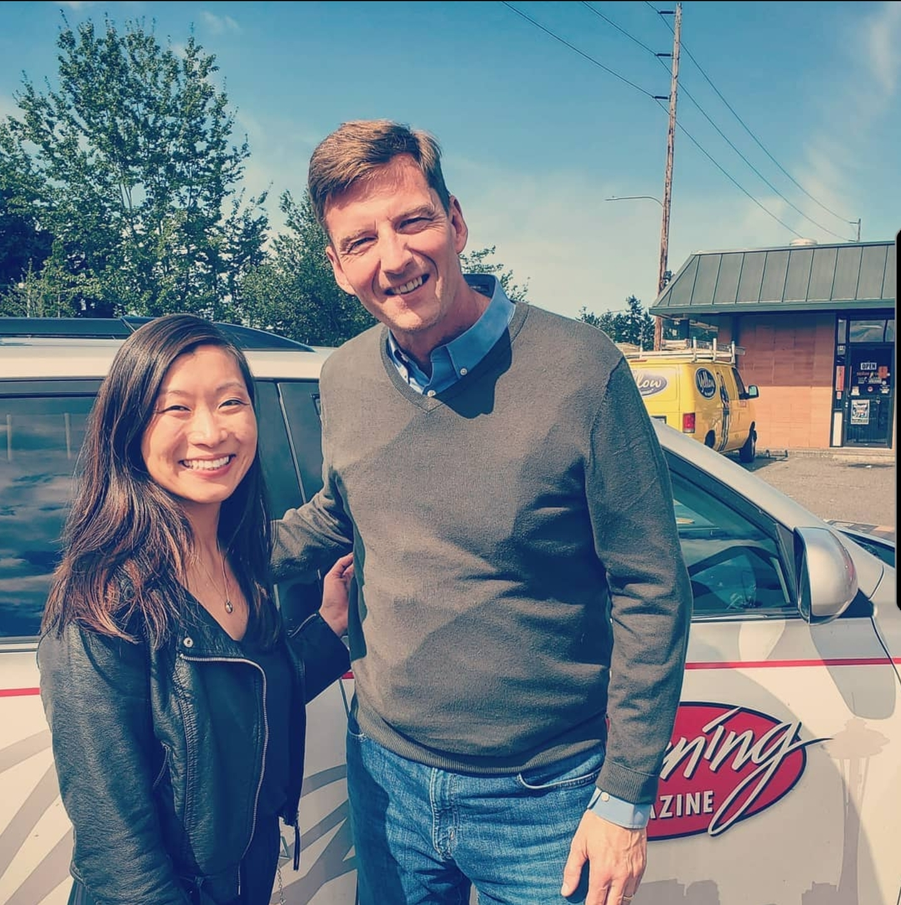

WELCOME TO MY WEB PORTFOLIO
Hi! My name is Kimm Moore
A current Bellevue College Digital Marketing Student in the greater Seattle area
I am passionate about all things digital marketing, specifically advertising, SEO, and content marketing. Learn more about my background and social media experience in the About Me section. See successfully completed web design projects in my School Projects Examples.
